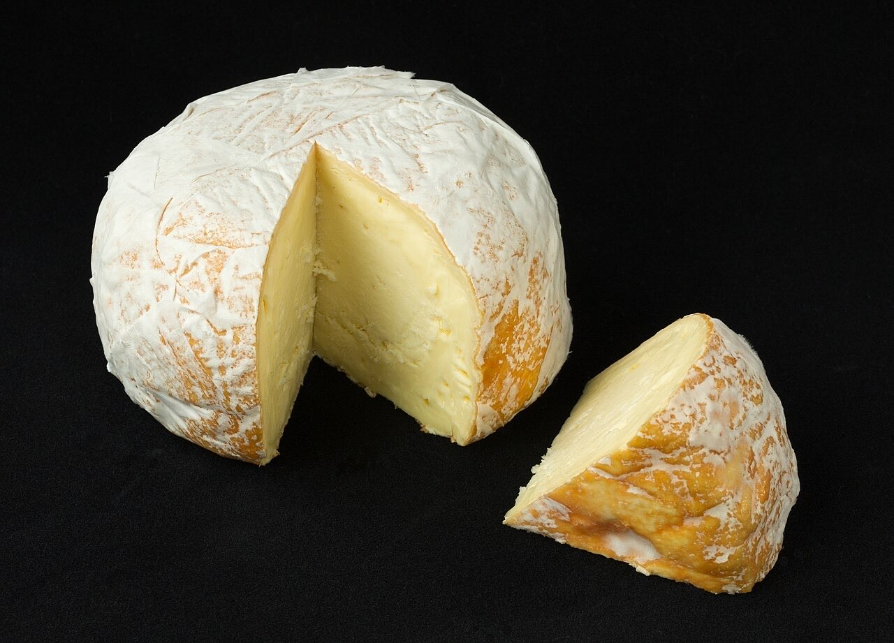

Mercearia gourmet / queijaria · Centro
Rota do Queijo
Dezenas de queijos à sua espera
A Rota do Queijo é uma loja especializada em queijos na Alameda de São Dâmaso, no centro de Guimarães. Dezenas de variedades, com provas e encomendas por WhatsApp.
Dezenas de variedades
Queijos para provar, escolher e levar para a mesa.
Encomendas por WhatsApp
Escolha à distância e levante na loja ou peça entrega.
Também lembranças
Cadernos e pratos pintados à mão, para oferecer.


Fotografias ilustrativas · no site final usamos as vossas.
Encomendas
Faça a sua encomenda
Diga o que precisa e quando quer levantar ou receber. Respondemos por WhatsApp.
Assim chegaria a mensagem ao vosso WhatsApp. Nesta demonstração nada é enviado.
Visitar
Onde estamos
Alameda de São Dâmaso 59, 4810-286 GuimarãesHorário
Horário a confirmar convosco
Proposta para Rota do Queijo
Gostou? Isto pode ser o vosso site.
Esta página foi feita de propósito para o vosso negócio por João Machado, programador web aqui de Guimarães. Inclui:
- Página rápida no telemóvel, com o vosso nome e identidade
- Ementa e preços fáceis de atualizar
- Botões para ligar, enviar WhatsApp e ver como chegar
- Pedidos de reserva ou encomenda diretamente para o WhatsApp
- Domínio próprio (ex.: rotaqueijo.pt) ligado ao Google Maps
Eu trato do alojamento e da manutenção. Sem compromisso.